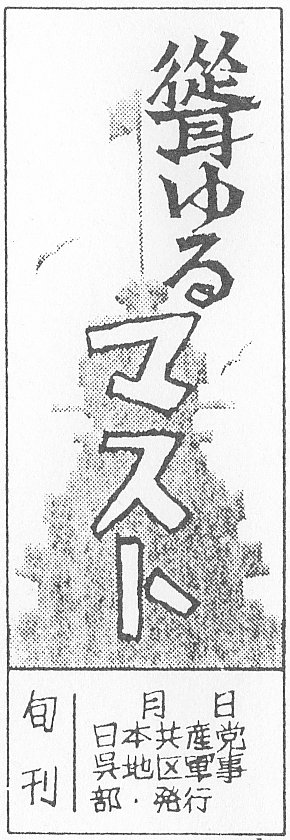
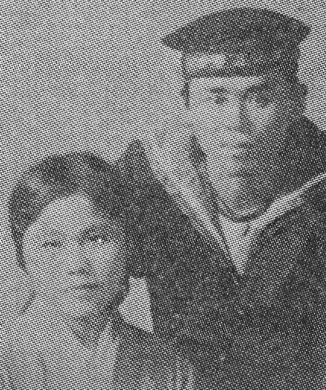
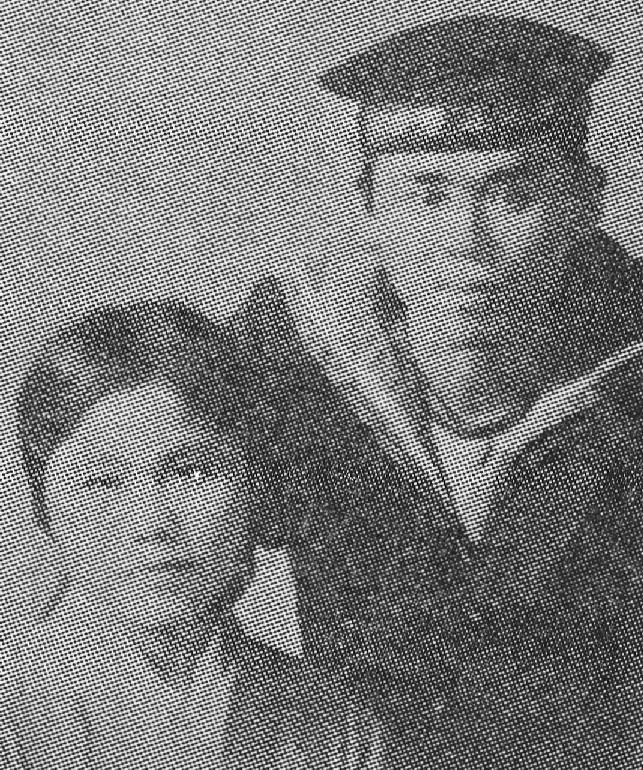
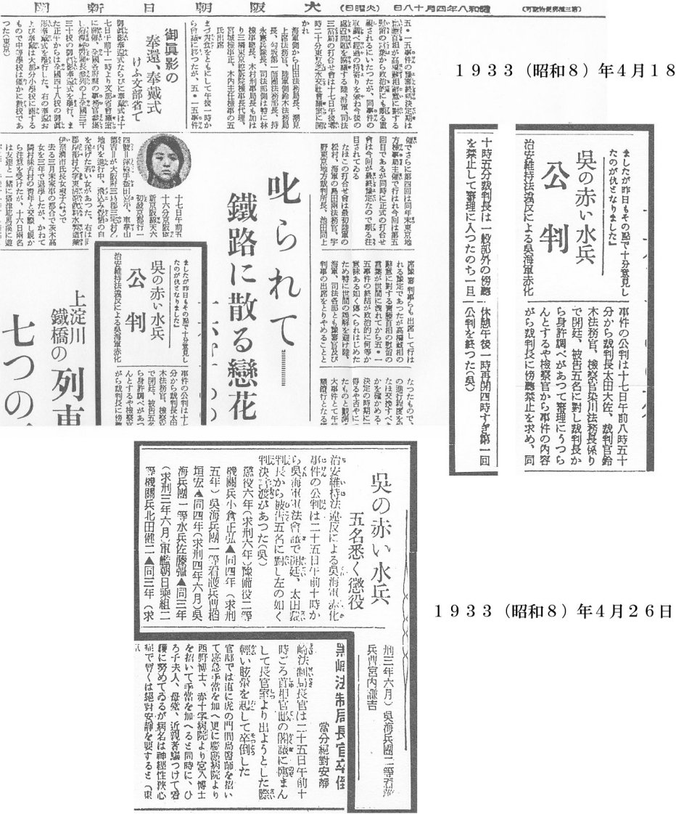
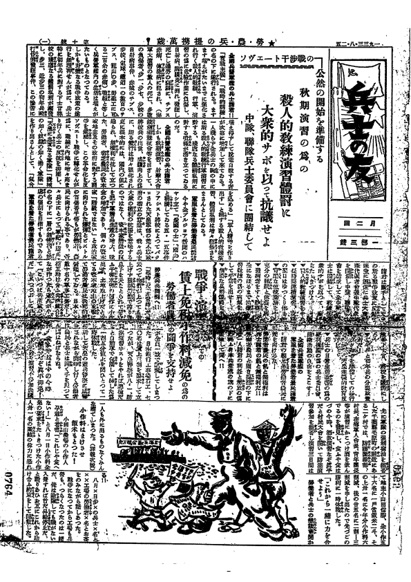

戦前の反戦運動 2
「戦争に反対して、命がけで活動した人たちの記録」
「当時の人たちは、何故あの無謀な戦争に反対しなかったのか」という疑問を持ち、しばしばそうした質問をすることがある。
たしかに大部分の人は、何の疑いもなく侵略戦争を「聖戦」と信じて戦争に協力していったことはたしかである。
戦争に非協力的であれば、「非国民」のレッテルを貼られて非難された。また軍隊に反抗すれば、「反軍的行為」として検挙し処罰された。
一人でも見逃すまいと常に、特高警察や憲兵の目が光っていた。
しかし、そういう厳しい状況下にあって、少数ではあったが、戦争とファシズムに反対する人びとや組織があった。
彼らは侵略戦争の本質を暴露し、真実を伝えようとした。とりわけ侵略戦争遂行の中心であった軍隊の中で反戦活動が行われていたことに注目したい。
反戦運動の資料例
１、反戦パンフ『兵士の生活』 （戦争反対同盟準備会編、1929年10月刊）
 反戦パンフ『兵士の生活』
反戦パンフ『兵士の生活』
何故戦争が起こるのか。国家、階級の問題までさかのぼる社会科学的概念であるが、平易な文章で、的確な把握がなされている。
このパンフレットを読めば、近代国家における侵略戦争の性格がよく理解できるのではなかろうか。
戦争反対同盟とは、対支非干渉同盟が三・一五事件で活動不能の状況になった中で、捕らわれなかった人たちによって新たな活動を進めるべく作られた組織である。
1928年（昭和3）7月8日に、第1回戦争反対同盟組織準備協議会が行なわれているが、1928年という年はどんなことが起こった年であろうか。
3月15日には三・一五事件がおこっている。全国で、共産党員とその同調者が1600人もいっせいに検挙され、共産党員と共産青年同盟員480人が起訴された大弾圧である。
弾圧は、共産党にとどまらず、4月10日には、労働農民党・日本労働組合評議会・全日本無産青年同盟の解散命令が当時の田中内閣によって下されている。
その後、政府は4月20日に、第2次山東出兵声明を発表し、5月には日本軍が山東省済南で国民政府軍と衝突している（済南事件）。
一方で治安維持法の拡大強化を狙った治安維持法改正案を議会提出（廃案になった後、緊急勅令として閣議決定）するなど、戦争拡大と戦争批判勢力に対する大弾圧を強引に進めている時期なのである。
戦争反対同盟は、そのような内外情勢が緊迫した中で、労農新党準備会（新労農党の前身）のよびかけて、日本労働組合全国協議会（全協）、全国農民組合（全農）、ナップ（全日本無産者芸術連盟）、産労（産業労働調査所。３・15事件ののちは野呂栄太郎）、無産者新聞、自由法曹団（進歩的な弁護士の組織）などによって作られたのである。
その主要なスローガンは「対支干渉反対、ソ同盟を守れ、新帝国主義戦争反対」である。『戦争反対ニュース』を発行、国家総動員演習などの戦争体制づくりに反対した。逮捕者は、27年～28年で約850人にのばった。
『兵士の生活』の最後のページに書かれてあるスローガンの一つ「入営者解雇反対」は軍隊に入る者にとって死活の問題であった。
当時、不況のため労働者の解雇・賃金カットの攻撃は凄まじく、それが当時の労働争議の大きな争点でもあったのである。
したがって、入営に伴う解雇が会社側から通告されることもしばしばであり、除隊後の再雇用を要求する労働争議も多数見られたのである。
また、日本における軍隊の封建的体質は、当時の欧米の軍隊と比較しても特異であり、そのことを告発したスローガンは人間の尊厳を守るためのものとして至極当然なものと言える。
貧しい労働者・農民の家庭であれば、重要な働き手である自分白身が兵隊に取られることが、経済的にどんなに痛手となるか、じっくり読み取りたい。
この時期、このような反戦抵抗の活動をすることは容易なことではなかった。弾圧を恐れず、仲間とともに勇敢に立ち向かっていったことへの人間的な共感、ヒューマニズムの精神にも触れられ、頭の下がる思いがする。
２、赤旗パンフレット『兵士諸君に与ふ』 （1932年9月1日）
 『兵士諸君に与ふ』
『兵士諸君に与ふ』
日本共産党が対軍隊工作のために1932（昭和7）年9月1日に出したパンフレット。
日本共産党は軍隊内での革命活動を服視し、そのための軍隊内での反戦活動がくりかえし行なわれた。特に、1938年のコミンテルン第6回大会で軍隊内での活動の重要性が指摘され、軍隊内での活動が展開されていった。1932年7月、日本共産党中央に軍事部が設置され、機関紙『兵士の友』発行などの活動をはじめる。
軍事部は軍隊内に革命的兵士による細胞を結成して、軍事委員会を建設することを目指した。同年8月に軍事活動の行動綱領を決定して、それを9月1日に赤旗パンフレット第29集『兵士諸君に与ふ』として発行した。
そこには「兵営・軍艦の兵士諸君！
吾々はかつては、労働し搾取される労働者農民であった。今は軍服を着た労働者、農民である。そして、除隊後は再び労働し、搾取される労働者、農民となる。我々は一刻も工場・農村で苦闘しつつある友人を忘れない」と呼びかけている。
そして軍隊内での活動について「我々は………兵営で、軍艦で、あらゆる場所で、機会ある毎に『何が真実か』『我々は何をなすべきか』を具体的事実に依って懇切に教へ、実際のとうそうを通じて、一切の欺瞞から救ひ上げ、固く手を握って共に闘ひ得る様に導かねばならぬ」と述べている。
日本共産党の対軍隊内工作の特徴は、第一に兵士の日常的要求・不満などをとりあげて、これを大衆運動にまで発展させていく方針であり、
パンフレットには「入営・出征中の家族の生活保証」「入営に依る失業反対。除隊後の即時就職」
「士官並みの食事」「七時間勤労制の確立」「勤務時間以外の使役反対」
「奴隷的服従反対」「体罰・不当処罰反対」「天皇主義的強制教育反対」
「帝国主義戦争反対」「満州・朝鮮・台湾の独立」などの要求が掲げられている。
第二に兵士に対する分断工作の克服をめざし、パンフレットには、「軍隊内では、あらゆる手段、方法を尽して、兵士の問に離間策が講ぜられてゐる。
上等兵と一、二等兵、古兵と新兵とは極度に対立さされてゐる。これは支配階級の奸策だ。それに依って兵士大衆の団結を防止しようとしてゐるのだ」としている。
３、『聳ゆるマスト』（そびゆるマスト）（1932年2月創刊）

『聳ゆるマスト』題字《復元》（戦後、平原甚松氏による）
1931（昭和6）年の「満州事変」後の日本では、社会民衆党や総同盟、そして新聞・ラジオも戦争を支持し協力した。
戦争反対を主張したのは、非合法下の日本共産党、全協、反帝同盟と一部の人びとであった。
日本共産党は、東京・横須賀・大阪ほかの軍隊内にも組織をつくり、新聞やビラを配布して戦争反対を呼びかけた。
共産党中央では、非合法の『赤旗』（1929年7月復刊、1932年当時の発行部数7000）を、軍事部から『兵士の友』（1932年9月刊、創刊号は1500部）を発行した。
広島県呉地区軍事部では『聳ゆるマスト』（1932年2月創刊、同年10月まで）を発行、配布した。
当時の呉地方には、次のような民主的な新聞（発行者）も自主的に発行されていた。
『唸るクレーン』（呉海軍工廠内の共産党組織）、
『軍需列車』（国鉄労働者の共産党組織）、
『煙る港』（共産青年同盟呉地区）、
『学生仲間』（中学校自治学生会）。
『聳ゆるマスト』の紙名は、議論の末に、平原甚松（第2代目の編集長）の提案が採用されて決まった。
初代編集長は阪口喜一郎、第3代目編集長は木村壮重（むらしげ）である。
 阪口喜一郎(中央）

木村壮重
阪口喜一郎(中央）

木村壮重
『聳ゆるマスト』紙は、ガリ版によるザラ紙刷り4ページ2段組みで、
あいつぐ弾圧等の困難の中で、第6号まで発行された。
号順の発行状況は次の通りであった。
創刊号（1932年2月） 30部余り
第2号（3月） 40部余り
第3号（3月下旬） 70部余り
第4号（4月） 約120部
第5号（10月） 120部余り
第6号（10月下旬） 100部余り
その内容は、おおよそ次のとおりで、極秘のうちに届けられた同紙は、水兵読者たちの共感を集めた。
一面 同紙の主張 「中国への侵略戦争反対」が中心
二面 基礎理論の記事
三面 水兵の不平不満、待遇改善と自由の拡大を要求（根底に、基本的人権や人間性の尊厳の主張があった）
四面 必読書の紹介、軍港のトピック、編集後記
『聳ゆるマスト』の発行は、当時の広島県内の苛烈な弾圧下にもその網をかいくぐって続けられた。
まさに、日本帝国海軍の心臓部に″反戦″ののろしをあげた、といえよう。
1932（昭和7）年5月20日付けの『赤旗』第75号は、『聳ゆるマスト』について、「軍港新聞を発行 帰還水兵に呼びかけて」との見出しで記事を載せている。
同年八8月末のアムステルダム世界反戦大会で、日本代表片山潜が、軍港新聞の発行を報告している。
４、大阪朝日新聞の記事（1932（昭和8）年4月18日付）

朝日新聞記事
「呉の赤い水兵公判」
「治安維持法違反による呉海軍赤化事件の公判は17日午前8時50分から裁判長太田大佐、裁判官鈴木法務官、検察官染川法務長係りで開廷、被告5名に對し裁判長から身許調べがあって審理にうつらんとするや検察官から事件の内容がら裁判長に傍聴禁止を求め、同10時5分裁判長は一般部外の傍聴を禁止して審理に入ったのち一旦休憩,午後1時再開4時すぎ第1回公判を終った。（呉）」
平和と民主主義を求めた若い兵士らの反戦活動は、「赤い水兵」らの「赤化事件」と報道され、国賊扱いされたのである。獄舎での扱いも陰惨をきわめ、阪口はこれに激しく抵抗し、看守たちに殴り殺されたのである。
 判決文
判決文
《コラム》
 「その後」の反戦兵士
「その後」の反戦兵士
５、『兵士の友』（1932（昭和7）年9月15日の創刊）
 『兵士の友』創刊号 1-4面
『兵士の友』創刊号 1-4面

『兵士の友』10号（1933（昭和8）年8月25日) 1-4面
1931（昭和6）年9月18日、日本軍は奉天（現在の瀋陽）郊外の柳条湖で南満州鉄道を爆破し、満州への侵略戦争を開始した（満州事変）。
野党の政友会は積極的にこの戦争を支持し、社会民衆党も開戦１カ月後の10月に支持を決め、翌年11月の総選挙では、「満蒙の権益を民衆へ」と主張した。
社会民主主義者も天皇制政府の弾圧を恐れて支持する態度をとった。そういう中で一貫して反対したのは、すでに非合法化されていた日本共産党だけであった。
日本共産党は満州事変の起きる2カ月前に、日本帝国主義が近く戦争を起こそうとしていることを暴露して、反戦闘争を呼びかけた。
31年8月1日の「反戦デー」では、非合法の集会やデモを各地で組織して、「日本軍隊の満州、朝鮮及び台湾からの即時引き揚げ」を要求した。
戦争が始まると、全国の労働者、農民、兵士に檄を出して反戦を呼びかけた。
「奉天ならびに、一切占領地から即時軍隊を撤退せよ！」
「一人の兵士も戦線に送な！」
「帝国主義日本と中国反動の一切の軍事行動に反対せよ！」
「帝国主義のあらたなる危険に対して闘争せよ！！」
こうした情勢の中で日本共産党は、1932年2月に『聳ゆるマスト』を発行して直接戦争にかかわる呉、横須賀の軍港や軍艦（長門、榛名、山城）内に反戦活動を広げていった。
また共産党中央は軍事部を設け、『兵士の友』（月2回発行、1部3銭）を発行した。
1932（昭和7）年9月15日の創刊号の発行の辞には
「なんのために戦争をしているのか」と疑問を投げかけ、
「自分一人が働いてさえ、食うや食わずにいたのに、戦争に行ったら年老いた親達はどうして生きていくのだろうか」
「軍隊では模範兵といわれていたのに、除隊となると失業して路頭に迷う。これは一体どうしたわけか」と兵士の切実な声を紹介している。
また論説には、「『忠君愛国』とか『東洋平和』とか美名で吾々をごまかし、再び殺りくの戦場に送って、ソ連・中国・蒙古を侵略しようとしている」と
天皇制政府の真の意図を明らかにし、厳しく批判している。
そして、「吾々兵士は兵営、軍艦の兵士大衆の中でこのことを暴露し、反戦集会をもつようにつとめねばならぬことが兵士の任務である」と呼びかけている。
また33年3月10日発行の第2号には、
「天皇主義軍隊を先頭とする戦争こそ勤労大衆を飢餓から救う道であるとの宣伝によって行われている」と戦争の欺瞞性を強調し、
「兵士、労働者、農民大衆の歓呼の声に迎えられ、資本家、地主、天皇制軍閥、官僚共を戦慄させている。
それは何よりも、『兵士の友』は、大衆の要求を最も勇敢に戦うからである」と、第2号発刊の意義を述べている。
『兵士の友』は、国内だけでなく諸外国の兵上達の闘いの状況をも載せている。例えば、「ギリシア兵士、農民への発砲を拒否」「米国廃兵五千名の示威」「労農パルチザン益々旺ん」（見出し）などである。
1933（昭和8）年12月9日付けの第31号には、「先の『友』第12号には残念ながらガリ版刷であった。今再び諸君に送る第31号もガリ版刷だ。
極度の財政難と度重なる敵の弾圧が俺たちの『兵士の友』活版印刷を一時中絶せしめ……」と記されている。これ以降は官憲の弾圧で発行不能となり『兵士の友』は、この第12号をもって終っている。
戦前の反戦平和運動 1 へ
戦後の反戦平和運動 へ
トップページに戻る